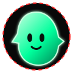

PROJECT_001
CPU Reader
Exploração de informações do processador e do hardware a partir do ambiente Linux, aproximando software, sistema operacional e arquitetura.
SYSTEM INSPECTIONVER REPOSITÓRIO ↗
PORTFÓLIO · DESENVOLVIMENTO & SISTEMAS
Sou Manoel E. S. S., estudante de tecnologia com foco em Linux, programação C, arquitetura de computadores e software open source. Exploro o que existe por baixo das abstrações — do hardware às ferramentas que usamos todos os dias.
Aprender não é só consumir abstrações. É investigar, testar, depurar e documentar o que acontece por baixo.
Teoria → laboratório → código → revisão.

Minha formação combina graduação em Sistemas de Informação e estudos em Análise e Desenvolvimento de Sistemas, complementados por experimentos próprios e aprendizado independente.
Tenho interesse especial em entender como programas são compilados, como sistemas operacionais expõem o hardware e como ferramentas simples podem resolver problemas reais. Uso projetos pessoais como laboratórios para consolidar fundamentos.
O objetivo é evoluir com consistência: código legível, experimentos reproduzíveis, documentação útil e uma compreensão cada vez mais profunda dos sistemas.
Repositórios que transformam estudo em ferramentas concretas. Consulte o código, acompanhe a evolução e explore os detalhes técnicos.
Exploração de informações do processador e do hardware a partir do ambiente Linux, aproximando software, sistema operacional e arquitetura.
Projeto de gerenciamento de arquivos para estudar operações do sistema, organização de código e construção de utilitários de uso direto.
Espaço de experimentação com binários e fundamentos de sistemas, voltado à investigação prática e ao aprendizado por testes.
Projeto focado em shell e automação: uma forma de explorar o terminal, comandos e a composição de pequenos fluxos de trabalho.
Um mapa de estudos em evolução — não uma lista de domínio absoluto. A prática e a documentação fazem parte do processo.
Investigar documentação, inspecionar o comportamento do sistema e construir um modelo mental antes de depender de uma solução pronta.
Transformar dúvidas em pequenos experimentos, comparar resultados e aprender com erros reproduzíveis.
Manter projetos públicos, registrar decisões e evoluir com feedback, revisão e consistência.
Para conversar sobre projetos open source, tecnologia, sistemas Linux ou oportunidades de aprendizado e colaboração, entre em contato pelos canais abaixo.